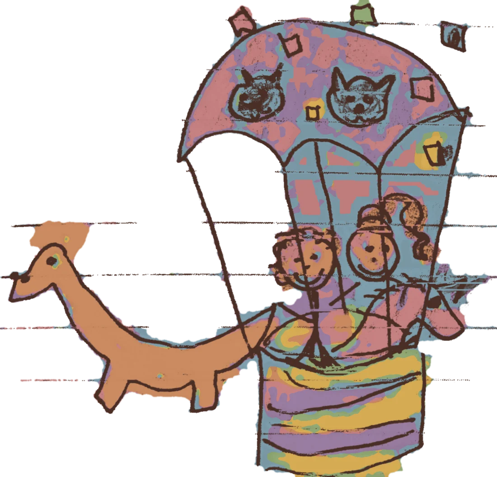
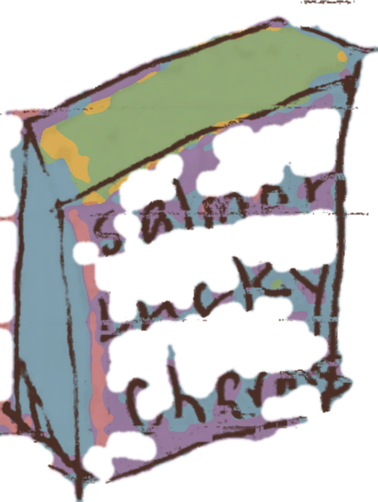
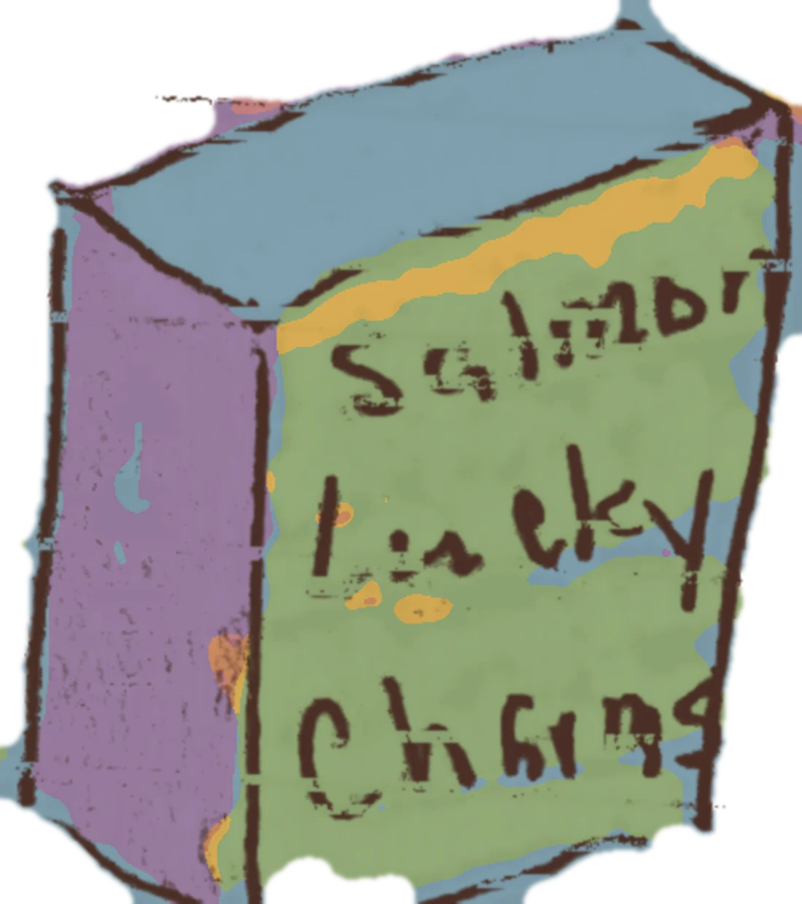

Five Salmon Cubes to Cheshire
Draft story, written to fill this space. Nana's own version is coming.

Cheshire and Buster were two gray cats who would eat only one kind of breakfast: Salmon Lucky Charms. Cheshire liked the box with the green top. Buster liked the box with the blue top. They tasted exactly the same, but you could never tell them that.
One morning the boxes were empty, and the only place to get more was Castle Charms, far across Wonderland. So the girl and her friend climbed into the basket under the big pink parachute, Cheshire and Buster climbed up onto the canopy, and away they floated.
The dragon wanted to come too. But the dragon was much too big for the parachute. So the dragon walked along underneath, and the girl held him by the tail, and that is how they traveled: half flying and half walking, which is a very good way to see the countryside.
Every time the cats got hungry, the girl called out, "Five salmon cubes to Cheshire!" and tossed them up, one, two, three, four, five, and then five more to Buster, so nobody would feel left out.

